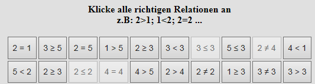

Im nachfolgenden Test sehen Sie Behauptungen über
die Beziehungen
zwischen ganz einfachen Zahlen.
Sie sollen nur zutreffende Behauptungen
anklicken
| Beziehung |
Bedeutung |
Beispiel
korrekt |
Beispiel
falsch |
| > |
größer als |
2 > 1 |
2 > 3 |
| ≥ |
größer als oder gleich |
3 ≥ 2
3 ≥ 3 |
3 ≥ 4 |
| = |
ist gleich |
2 = 2 |
|
| ≠ |
ungleich |
2 ≠ 1 |
1 ≠ 1 |
| < |
kleiner als |
1 < 2 |
2 < 2 |
| ≤ |
kleiner als oder gleich |
2 ≤ 3
2 ≤ 2 |
2 ≤
1 |
Ihre Aufgabe besteht darin, so schnell wie möglich, aber dennoch
korrekt
die zutreffenden Behauptungen (mit linker Maustaste) nacheinander anzuklicken,
Beispiel
Sie sehen unten einen Ausschnitt aus den ersten 20 Behauptungen

Die hier markierten Behauptungen sind richtig.
Sie sollten nur einmal die korrekten Behauptungen zügig ohne Rücksprung durchgehen
und so schnell wie möglich, aber dennoch korrekt antworten.
Am Ende sofort den Button "Bearbeitung bestätigen" anklicken!
Zunächst ein Probebeispiel mit 16 Behauptungen